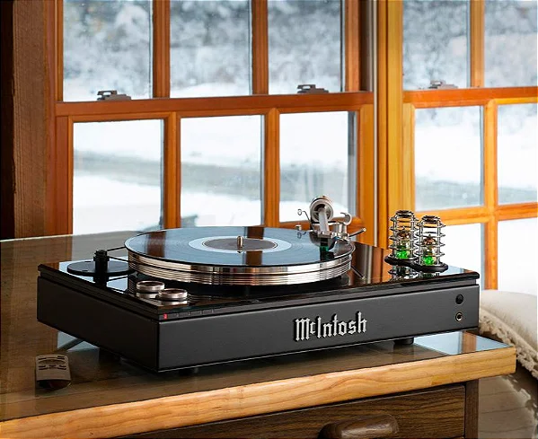
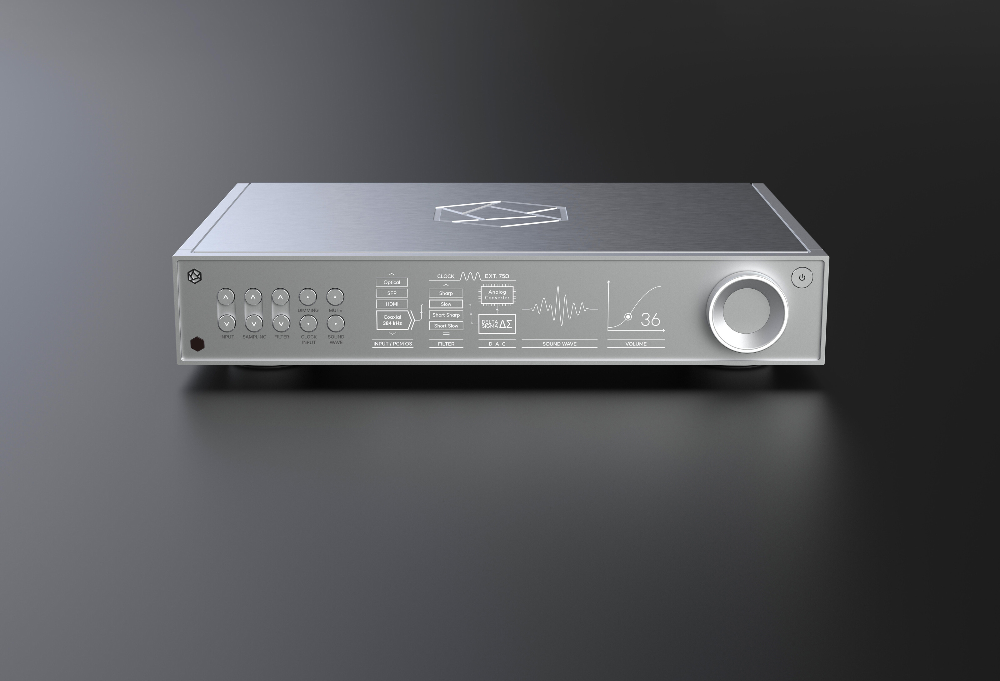
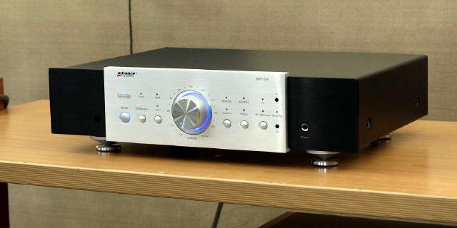
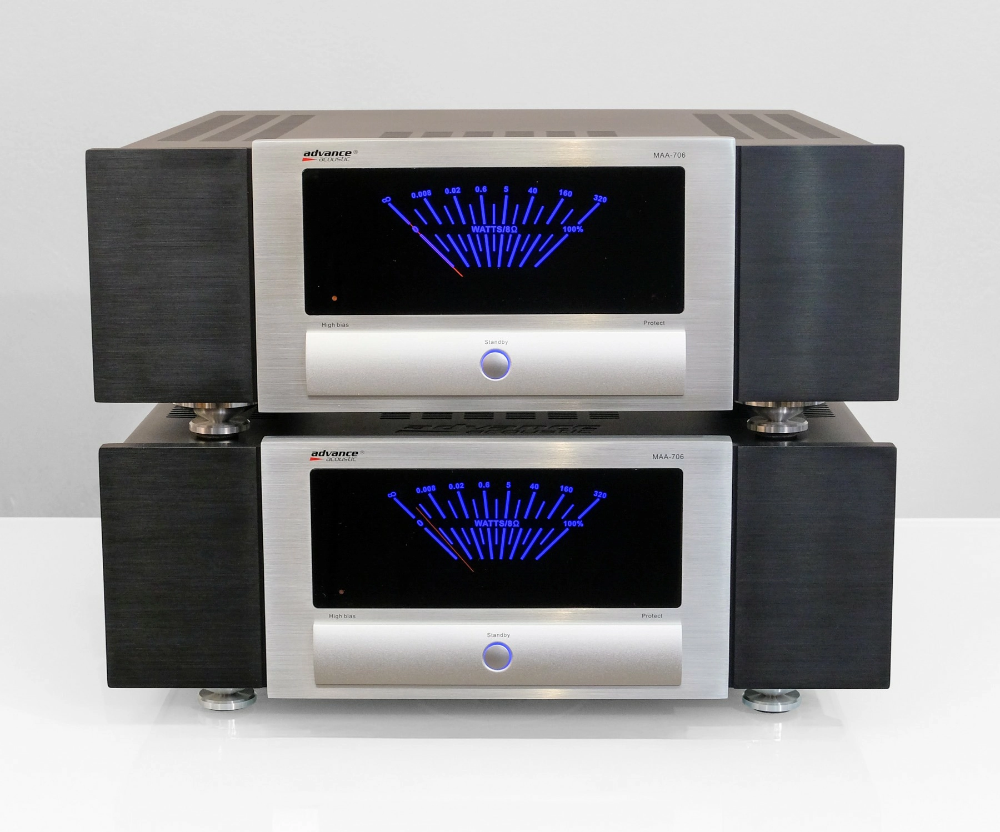

Fonte de áudio
As fontes de áudio são os equipamentos responsáveis por fornecer o sinal sonoro para o sistema Hi-Fi, sendo o ponto de partida de toda a reprodução musical. Elas podem ser analógicas, como toca-discos e tape decks, ou digitais, como CD players, computadores, streamers e smartphones. Além disso, o áudio pode vir de arquivos armazenados localmente — em HDs, SSDs ou servidores — ou diretamente da nuvem, através de serviços de streaming como Spotify, TIDAL e Qobuz. A qualidade da fonte influencia diretamente o resultado final do sistema, tornando sua escolha uma etapa fundamental para uma boa experiência sonora.

DACs
Os DACs (Digital-to-Analog Converters, ou Conversores Digital-Analógico) são os equipamentos responsáveis por transformar sinais digitais em áudio analógico. Eles recebem os dados digitais vindos de fontes como computadores, streamers, CD players e smartphones, realizando a conversão com o máximo de fidelidade possível. Em sistemas Hi-Fi, um bom DAC pode proporcionar maior nível de detalhes, melhor separação dos instrumentos, palco sonoro mais amplo e uma reprodução mais limpa e natural da música. Muitos aparelhos modernos já possuem DAC integrado, mas modelos dedicados costumam oferecer desempenho superior para audiófilos e entusiastas do áudio.

Pré-amplificadores
Os pré-amplificadores são responsáveis por receber e gerenciar os sinais de áudio antes da etapa de amplificação principal. Eles atuam como o centro de controle do sistema Hi-Fi, permitindo selecionar fontes de áudio, ajustar o volume e, em alguns casos, controlar tonalidade e balanceamento. Além disso, ajudam a preservar a integridade do sinal sonoro, preparando-o para ser enviado ao amplificador de potência com o mínimo de interferências e perdas.

Amplificadores
Os amplificadores, por sua vez, têm a função de aumentar a potência do sinal de áudio para que ele consiga movimentar corretamente as caixas acústicas ou fones de ouvido. Em um sistema Hi-Fi, essa etapa é essencial para garantir dinâmica, controle e fidelidade sonora durante a reprodução musical. Existem diversos tipos de amplificadores, como integrados, de potência e modelos valvulados, cada um com características próprias que influenciam a assinatura sonora do sistema.
